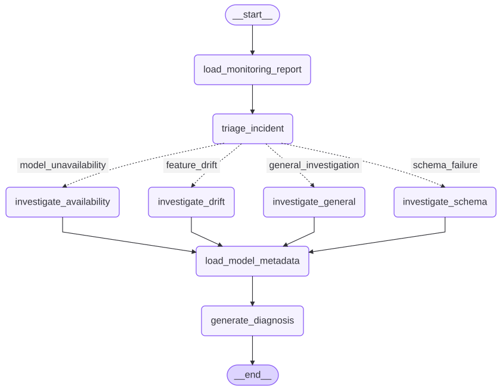

01 / MLOps & agentic AI
AegisOps Loan Risk
Connect model governance, monitoring, and incident investigation.
Read case studyEngineering notebook / Project directory
Architecture, implementation, and evaluation across applied AI, backend systems, robotics, and control. Start with a full case study or explore the project notes below.
01 / MLOps & agentic AI
Connect model governance, monitoring, and incident investigation.
Read case study02 / Local AI & retrieval
Explore technical PDFs with local models and traceable evidence.
Read case study03 / Backend engineering
Enforce permissions and booking integrity across concurrent requests.
Read case study04 / Machine learning
Bring temporal evaluation, uncertainty, and deployment together.
Read case studyAI, ML, MLOps & agents

A deployed model needs more than training accuracy: reproducible preprocessing, threshold governance, immutable promotion, safe serving, drift detection, and disciplined incident investigation must work together.
Built deterministic data preparation, Logistic Regression and XGBoost training, validation-only cost-aware threshold selection, test gates, versioned promotion, FastAPI serving on Cloud Run, monitoring reports, synthetic incidents, LangChain tools, and a routed LangGraph workflow.
The system separates deterministic loading, validation, triage, routing, and evidence collection from Gemini-based interpretation. The agent recommends actions but cannot retrain, roll back, redeploy, or modify production.
LLM adaptation needs a repeatable data-preparation, fine-tuning, and evaluation workflow.
Built a Gemma 3 1B IT post-training workflow with curated OASST1 conversations and completion-only LoRA supervised fine-tuning.
Controlled base-vs-adapter evaluation and generation diagnostics are part of the workflow, alongside an ML-troubleshooting specialization data pipeline.
When an LLM performs both calculation and explanation, results are harder to reproduce, validate, and audit.
Designed typed schemas, the deterministic calculation boundary, structured evidence, CLI and Streamlit delivery paths, and an optional grounded explanation layer.
One validated computation engine supports multiple interfaces through a stable JSON contract, avoiding duplicated metric logic.
Random validation and accuracy-only reporting can hide temporal leakage, minority-class failure, and changes in production data.
Connected temporal validation, LightGBM and XGBoost experiments, calibration, conformal prediction, MLflow tracking, orchestration, API serving, and deployment components.
Data preparation, modeling, evaluation, monitoring, and serving are represented in one reproducible platform workflow.
Retrieval quality varies by query, document structure, and evidence density; one search strategy is not consistently sufficient.
Implemented dense, sparse, hybrid, MMR, multi-query, and parent-document retrieval with reranking, evidence checks, corrective routing, citations, guardrails, and traces.
Retrieval strategies can be compared through one evaluation and observability workflow with explicit weak-evidence handling.
IT support knowledge is often fragmented across structured records and internal documents that should remain local.
Built multi-source retrieval over CSV, SQLite, and PDF content with Chroma, local Ollama inference, source-grounded answers, escalation behavior, tests, and CI.
Multiple source formats are available through one privacy-aware help-desk interface without hosted model inference.
Scheduled API ingestion must handle validation, reruns, duplicate prevention, and database reliability rather than only moving data once.
Implemented the Airflow DAG, API extraction, record validation, PostgreSQL loading, idempotent upserts, local container setup, tests, and CI checks.
The pipeline can be rerun safely while preserving a consistent destination table and testable data-contract behavior.
Medical-image experiments require patient-level separation, imbalance-aware training, and interpretable evaluation.
Developed a configuration-driven DenseNet121 workflow with patient-disjoint validation, class-imbalance handling, MLflow, AUROC reporting, GradCAM, and tests.
Training, experiment tracking, quantitative evaluation, and visual explanation are integrated in one reproducible pipeline.
Unbounded self-reflection can increase cost and complexity without guaranteeing better evidence or a clear stopping condition.
Designed explicit graph nodes, iteration limits, Pydantic state, search and revision tools, citation URL checks, retries, and node-level tests.
The agent follows a controlled improvement loop that is observable, testable, and easier to debug than an open-ended autonomous process.
Cybersecurity papers contain relationships and evidence that are difficult to recover through flat keyword search alone.
Combined Neo4j ingestion, graph context, semantic embeddings, vector search, local Ollama generation, and source-aware response construction.
Generated answers retain page-level citations so readers can return to the supporting research evidence.
Local document assistants still require safe uploads, clear citations, latency visibility, and repeatable evaluation to be useful beyond a demo.
Implemented PDF ingestion, local embeddings and generation, Streamlit and FastAPI interfaces, source citations, upload safeguards, evaluation utilities, tests, and CI.
The same retrieval core supports interactive and API use while reporting evidence and operational behavior explicitly.
Robotics & MATLAB engineering
Sampling-based path planning must balance roadmap connectivity, collision safety, reproducibility, and clear failure behavior.
Separated the planner from the legacy GUI and implemented configurable sampling, exact point-to-segment obstacle checks, weighted graph construction, shortest-path search, clearance handling, deterministic seeds, and bounded retries.
The reusable API supports custom bounds and obstacles and is covered by MATLAB unit tests for endpoint correctness, reproducibility, invalid starts, and obstacle-free planning.
End-effector positioning requires converting Cartesian targets into joint references while accounting for coupled inertia, gravity, damping, motor gains, and gear ratios.
Organized the Simulink model, initialization workflow, inverse-kinematics S-function, nonlinear manipulator-dynamics S-function, physical parameters, and animated display into a portable repository structure.
The project preserves a legacy MDL and MATLAB S-function implementation with documented setup and archived historical files. It demonstrates modeling depth while remaining clearly identified as a legacy simulation project.
Reinforcement learning & control
Desalination operation must coordinate production, storage, demand, energy use, and process constraints over time.
Developed and evaluated learning-based operational strategies that connect sequential decision-making with the dynamics and constraints of the desalination process.
The published study reports the formulation, controller design, comparative experiments, and energy-aware operational results.
Hardware Trojan detection must distinguish normal behavior from multiple attack classes under measurement variation and class overlap.
Combined representation learning, staged classification, and uncertainty-aware inference for robust detection and attack identification.
The publication presents the model design, experimental protocol, comparative results, and uncertainty analysis.
Complex processes change with operating conditions, making one fixed linear model insufficient across the full regime.
Developed a Bayesian LPV identification framework to estimate parameter-varying dynamic models while representing uncertainty in the identified system.
The resulting models support control-oriented analysis across operating conditions and demonstrate a direct bridge between data-driven estimation and control engineering.
Partitioned edge inference exposes intermediate feature maps to communication noise and adversarial manipulation, while detection must remain lightweight enough for resource-constrained devices.
Partitioned a VGG11 model across three Raspberry Pi nodes, implemented channel-sparse feature perturbations and Mahalanobis-distance detection, calibrated clean-feature statistics, automated experiment grids, and measured detector and classification behavior.
The project connects adversarial ML with deployable edge systems by reporting real-device detection outcomes and computational overhead rather than relying only on desktop simulation.
These summaries explain problem framing, system design, evaluation, and research contributions without exposing unpublished methods, restricted datasets, or collaborator-owned code.